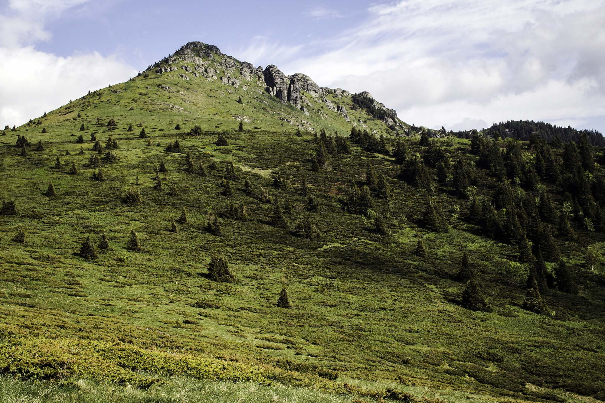
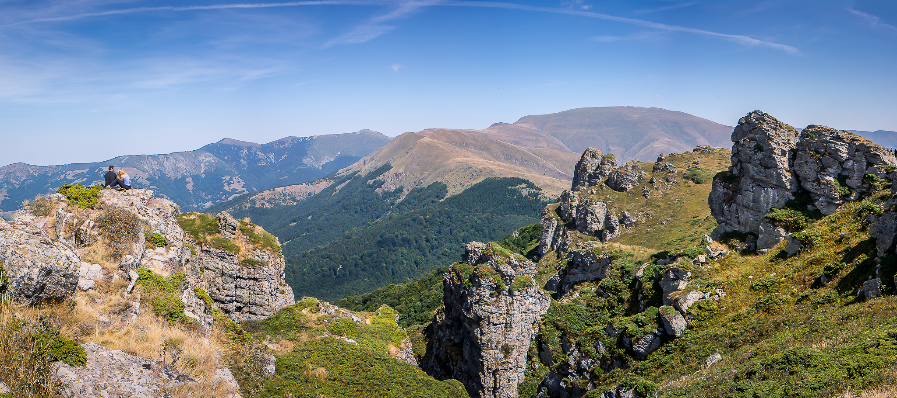

Stara planina je najveća planina u istočnoj Srbiji, visokoplaninski masiv koji se prostire kao prirodna granica prema Bugarskoj. Udaljena je 330 km od Beograda, 70 km od Niša i 50 km od Knjaževca i Pirota. Najviši vrh je Midžor, 2169 m.
Fascinantna lepota netaknute prirode čini Staru planinu najlepšom planinom istočnog dela Srbije i jednim od njenih najvrednijih turističkih prostora. Ona predstavlja prirodno bogatstvo izvanrednog značaja i zaštićeni je park prirode.

Stara planina je skoro pet meseci godišnje pod snegom, na visini između 1100 i 1900 m. To je dobar potencijal za izgradnju dugih staza za alpsko skijanje. Izgradnjom sistema žičara i ski staza, smeštajnih kapaciteta kao i druge infrastrukture, Stara planina će veoma brzo postati jedan od najvećih i najznačajnijih skijaških centara u Srbiji, posebno namenjen ljubiteljima skijaških sportova i kvalitetnog skijanja u okruženju neizmerne lepote i netaknute prirode. Prirodne karakteristike Stare planine pogodne su i za planinarenje, letenje zmajem i paraglajderom, ribolov, sakupljanje lekovitog i aromatičnog bilja, gljiva i dr.
“Babin zub”, koji se nalazi na nadmorskoj visini od 1.758 m, jedan je od najlepših krajolika Stare planine. Markantne stene Babinog zuba završavaju se jugozapadno Midžora (nadmorske visine 2.169 m), najvišeg vrha Stare planine i Srbije. Babin zub predstavlja zaštićeni prirodni rezervat. Sadržaj skijaškog centra “Babin zub” čine staze na lokacijama “Konjarnik”, “Sunčana dolina”, kao i “Markova livada”. Skijalište “Babin zub” poseduje četvorosednu žičaru “Konjarnik” sa pokretnom trakom za ukrcavanje skijaša, kapaciteta 1.400 skijaša na sat i ski lift ”sidro” “Sunčana dolina” kapaciteta 1.200 skijaša na sat, kao i dečiji ski vrtić sa pokretnom trakom “Markova livada”. Na lokaciji “Jabučko ravnište” nalazi se prva gondola u Srbiji. Osmosedna gondola prevozi skijaše od hotela u dalji sistem žičara i staza. U okviru ovog dela skijališta izgrađena je i četvorosedna žičara, i ski lift tako da je povezan sa delom skijališta na “Babinom zubu”. Više od 13 kilometara odlično uređenih staza, različitih težina, pripremljene su za skijaše svih kategorija. Za ljubitelje ekstremnijih sportova, obezbeđena je staza za slobodnu vožnju. Pored toga, u ski centru Stara planina je izgrađen sistem za veštačko osnežavanje, kako bi, i u slučaju nedostatka prirodnog snega, posetioci centra mogli da uživaju u zimskim sportovima. Ovo je samo početak razvoja skijaškog cetnra na Staroj planini. Izgradnjom sistema žičara i ski staza, smeštajnih kapaciteta kao i druge infrastrukture, Stara planina će veoma brzo postati jedan od najvećih i najznačajnijih skijaških centara u Srbiji, posebno namenjen ljubiteljima skijaških sportova i kvalitetnog skijanja u okruženju neizmerne lepote i netaknute prirode.